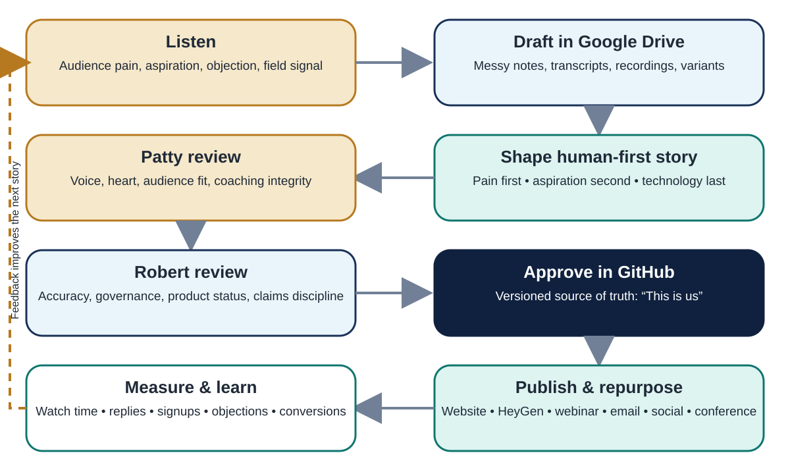

Content system
Drive is the workshop. GitHub is “This is us.”

Three depths
Why care?
Lead with the lived pain or aspiration.
What is it?
Explain the governed personal system in plain language.
Show me how.
Demonstrate one task, one boundary and one human correction.
Workshop disclosure: “We prerecorded the core presentation so we can focus on your questions live.”